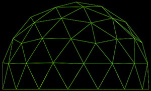

Become the best SAP consultant you can be through an intensive BOOTCAMP during the first weeks in our team
SAP Certification fully funded by us
Access dedicated trainings for the SAP modules you want to specialize in
Work on SAP implementation projects for worldwide customers from all industries (pharma / automotive / production / retail / telecom)
Work with the latest SAP Solutions, i.e. S/4HANA
Take part in all the stages of development of a SAP project
Agile way of working
Flexible schedule
Deloitte European Delivery Centre in Bucharest delivers for some of the biggest Deloitte projects across Europe.
Opening mid-2016, the SAP team is already fast approaching fast approaching 300 colleagues and set to grow exponentially. We are extremely proud of our award-winning SAP team, who has received multiple and consecutive SAP Pinnacle Awards during the last 7 years.
We strongly support our team members' career path, either for developing lateral skills or for upskilling, involving ou best trainers and the latest technologies.
Check out our SAP openings and enter our bootcamp
Ready to make the shift towards a SAP Consultant position?
Bring your talent and your ambition!
We'll provide the means to make it happen during an intensive BOOTCAMP during your first weeks after joining Deloitte ERDC.
Connect with our experts to deliver solutions that matter and you will see there is no limit to what you can achieve.
Financial Bootcamp
Supply Chain Bootcamp
ERDC experts will show you the specifics of S/4HANA SAP following a curricula you will apply once you are allocated on a project.You will learn about ongoing projects we develop for our clients.
EMEA experts will train you based on an international curricula, following specific client needs from various countries.
ERDC experts will show you the specifics of S/4HANA SAP following a curricula you will apply once you are allocated on a project. You will learn about ongoing projects we develop for our clients.
The bootcamp address the following modules:
MM (Material Management)
SD (Sales & Distribution)
EWM (Extended Warehouse Management)
PP (Production Planning)
QM (Quality Management)
PM (PLant Maintenance)
How can you navigate relentless disruption and tomorrow's uncertainty? By becoming a more Kinetic Enterprise™ - an intelligent enterprise built to evolve. It's time to reimagine everything. Deloitte can show you how - and help you make an impact with SAP® solutions
Deloitte received four 2019 SAP® Pinnacle Awards. Named Digital partner of the Year, as well as Partner of the Year for Customer Experience and SAP® SuccessFactors® - also winning for PurposeDriven partner Application of the Year. This year marks the second year in a row that Deloitte has received four SAP Pinnacle Awards - the most received by any SAP partner in 2019, or any other year.
We imagine, deliver and run the future.
At Deloitte, the worlds of business, creative, and technology intersect to transform the way we work, play, and communicate. We cannot quite put our finger on it, but that combo creates something kind of magical.
Bucharest is at the very heart of delivery for our biggest projects taking place across Europe, the home to Deloitte European Delivery Centre. Opening mid-2016 the SAP team is already fast approaching 110 and set to double across next couple of months.
From entry-level employees to senior leaders and we believe there’s always room to learn. We offer opportunities to help sharpen skills, work with industry-leading talent on a daily basis, in addition to hands-on experience in the global, fast-changing business world. From on-the-job learning experiences to formal training bootcamps, our professionals have a variety of opportunities to continue to grow throughout their career, while delivering products and services to Fortune 500 clients.
We imagine, deliver and run the future.
At Deloitte, the worlds of business, creative, and technology intersect to transform the way we work, play, and communicate. We cannot quite put our finger on it, but that combo creates something kind of magical.
Bucharest is at the very heart of delivery for our biggest projects taking place across Europe, the home to Deloitte European Delivery Centre. Opening mid-2016 the SAP team is already fast approaching 110 and set to double across next couple of months.
From entry-level employees to senior leaders and we believe there’s always room to learn. We offer opportunities to help sharpen skills, work with industry-leading talent on a daily basis, in addition to hands-on experience in the global, fast-changing business world. From on-the-job learning experiences to formal training bootcamps, our professionals have a variety of opportunities to continue to grow throughout their career, while delivering products and services to Fortune 500 clients.
We imagine, deliver and run the future.
At Deloitte, the worlds of business, creative, and technology intersect to transform the way we work, play, and communicate. We cannot quite put our finger on it, but that combo creates something kind of magical.
Bucharest is at the very heart of delivery for our biggest projects taking place across Europe, the home to Deloitte European Delivery Centre. Opening mid-2016 the SAP team is already fast approaching 110 and set to double across next couple of months.
From entry-level employees to senior leaders and we believe there’s always room to learn. We offer opportunities to help sharpen skills, work with industry-leading talent on a daily basis, in addition to hands-on experience in the global, fast-changing business world. From on-the-job learning experiences to formal training bootcamps, our professionals have a variety of opportunities to continue to grow throughout their career, while delivering products and services to Fortune 500 clients.
We imagine, deliver and run the future. At Deloitte, the worlds of business, creative, and technology intersect to transform the way we work, play, and communicate. We cannot quite put our finger on it, but that combo creates something kind of magical.
Bucharest is at the very heart of delivery for our biggest projects taking place across Europe, the home to Deloitte European Delivery Centre. Opening mid-2016 the SAP team is already fast approaching 110 and set to double across next couple of months. From entry-level employees to senior leaders and we believe there’s always room to learn. We offer opportunities to help sharpen skills, work with industry-leading talent on a daily basis, in addition to hands-on experience in the global, fast-changing business world. From on-the-job learning experiences to formal training bootcamps, our professionals have a variety of opportunities to continue to grow throughout their career, while delivering products and services to Fortune 500 clients.
Now, we are looking for SAP EWM Consultants for a strong, long-term partnership, either functional consultants with strong technical background or super-key users with strong process background.